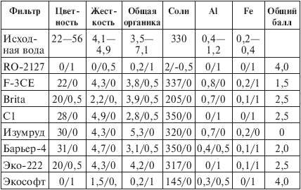
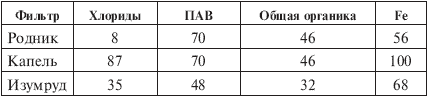
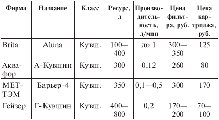
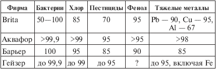

Все-таки фильтры проверяют!

Разумеется, проверяют. Цитирую: «В соответствии с приказом МЗ РФ от 20.06.98 г. № 217 и письмом Департамента госсанэпиднадзора Минздрава России от 17.11.98 г. № 1100/2652-98-111 работы по процедуре гигиенической оценки систем и устройств очистки и доочистки воды проводит Департамент госсанэпиднадзора Минздрава России или по его поручению Центр госсанэпиднадзора в Санкт-Петербурге».
Аналогичная ситуация в других российских городах – повсюду гигиеническую сертификацию отечественных и зарубежных фильтров осуществляют службы Госсанэпиднадзора, а сертификаты соответствия после проведения испытаний выдаются в государственной организации Стандартсервис или в уполномоченных ею структурах. Испытания фильтра должны подтвердить, что заявленные фирмой-изготовителем характеристики – ресурс, производительность и эффективность – выполняются в полном объеме. Если, например, фирма утверждает, что очистка по свинцу 95 % в течение всего срока эксплуатации фильтра при ресурсе 1000 л, то это проверяется, как и все остальные показатели – по микробиологии, хлору и хлорорганике, фенолам, пестицидам, ПАВ, нитратам, нитритам и всем тяжелым металлам. Испытания проводятся как на водопроводной воде, так и на специальных модельных растворах, требуют массу времени и труда и оплачиваются компаниями, производящими фильтры. В общем, сертификаты дорогого стоят!
Я видел протоколы этих испытаний и сертификаты – на каждый фильтр пачка документов толщиной в четыре пальца. Без них нельзя производить изделие, нельзя его рекламировать, и ни один магазин не примет его в продажу.
Это одна сторона медали – лицевая, блестящая и, можно сказать, посеребренная, дабы активнее уничтожать вредную бакофлору. А вот другая сторона, оборотная: оклад полковника Российской армии – 4000 руб., доцент или профессор в вузе получает порядка 2000 руб., научный сотрудник – 1000–1500 руб., врач… даже не стану говорить о доходах врача. А сколько, по-вашему, получает сотрудник Госсанэпиднадзора или, скажем, того же Стандартсервиса?
Испытания, протоколы, сертификаты… Рассказываю о них знакомому, который понимает толк в торговле фруктами, вином и водкой, а тот морщится – знаем, как получают эти сертификаты!
В самом деле, как?
Дальнейшие попытки выяснить истину
Ну, раз мы не верим протоколам и сертификатам и не можем проверить фильтр сами, попробуем выяснить, какие результаты проверки получили другие. В Интернете довольно много рекламных материалов на этот счет, а также сообщений о всевозможных проверках. С некоторыми я вас познакомлю. Начну с заметки, описывающей испытания восьми фильтров на киевской воде, которые провели в лаборатории ионного обмена и адсорбции ХТФ НТУУ КПИ[24] (Киев, Украина). Цель работы состояла в доказательстве того, что самый лучший фильтр для воды города Киева создан именно в указанной лаборатории совместно с МНПП «Экософт», и, разумеется, эту задачу удалось решить самым блестящим образом. В доказательство приводится большая таблица, которую я подсократил и теперь предлагаю вашему вниманию (табл. 6.1).
Необходимые пояснения. В первой строке таблицы («исходная вода») приведены сведения о киевской воде, взятой из крана, и можно заметить, что водица в матери городов русских – это вам не чай «Брук-Бонд» в двойных пакетиках и не пиво «Три медведя». По органике, алюминию и железу нормы ВОЗ превышены в 2–4 раза, да и отечественным нормативам вода не слишком соответствует. Поэтому авторы исследования проверяли, снижает ли фильтр жесткость воды, сохраняет ли полезные соли, убирает ли избыток органики и тяжелых металлов. Результаты оценивались в баллах, и эта оценка (0, или 0,5, или 1) дана через косую черту после каждого показателя, а в последней графе таблицы выведен общий балл. Можно заметить, что в графе «Fe» при одинаковых результатах 0,2 фильтру «Изумруд» выставлен ноль, а фильтру «F-3CE» – единица. Я объясняю это так: параметры исходной воды указаны в диапазоне (железо – 0,2–0,4 мг/л), но, вероятно, для каждого анализа измерялось содержание загрязнений на входе и выходе фильтра. Нужно полагать, что в случае «Изумруда» железа было 0,2 мг/л, фильтр ничего не задержал и получил нулевую оценку, а в случае «F-3CE» железа на входе было 0,4 мг/л, половина фильтром убрана, и он получил оценку «1».
Таблица 6.1. Сопоставление эффективности различных фильтров при очистке воды в Киеве

Комментарии (к табл. 6.1).
1. Выбор фильтров несколько странный – отсутствуют изделия «Аквафора» и «Гейзера», которые вместе с «Барьером» являются бесспорными лидерами отечественного рынка сорбционных фильтров. Два первых испытанных фильтра – это изделия «Instapure»: «RO-2127» – фильтр обратного осмоса (возможно, новая модель или вариант упомянутого в главе пятой «RO-100»); «F-3CE» – насадка. Правда, неясно, с каким картриджем она проверялась: с «R-2CB» или «R-5E» (у них разная эффективность очистки). Далее следует уже знакомая нам «Brita» и неведомый мне фильтр «C1»; потом московские «Изумруд» («Изумруд-КФ») и «Барьер-4», потом «Эко-222» – вероятно, блок из трех фильтров «Эко-2» («Северная Заря», СПб.). Наконец, в последней строке представлен киевский фильтр «Экософт-1», выполненный в рамках обычной технологии, то есть сорбционный и ионообменный. Тем не менее работает он как фильтр обратного осмоса «RO-2127» и даже лучше: ведь осмотический фильтр все убирает почти под ноль, в том числе полезные соли (за что ему выставлена оценка «-0,5»), а «Экософт-1» половину солей оставляет. Разумеется, он самый лучший для уникальной киевской воды, и киевлянам следует покупать только его.
2. Несмотря на явные ангажированность и спекулятивность этого «исследования», в нем есть кое-что интересное. Во-первых, обратите внимание, как функционирует фильтр обратного осмоса: практически ничего не пропускает и делает воду почти дистиллированной. Во-вторых, оцените фильтры «Brita», «С1», «Барьер» и «Эко» – «зарезать» их под корень киевским мудрецам все-таки не удалось; похоже, эти фильтры – честные работяги. В-третьих, взгляните на результаты для «Изумруда». Все, как говорится, «по нулям», и выходит, что этот дорогой фильтр с принципиально новой технологией не задерживает ровным счетом ничего. Не в этом ли ответ на вопрос: почему, несмотря на все свои преимущества, «Изумруд» не вытеснил за последнее десятилетие продукцию «Аквафора», «Барьера» и «Гейзера»?
История с «Изумрудом», которым я владею уже несколько месяцев, меня заинтриговала. Этот прибор запрещено разбирать, но в одной из компаний Петербурга его вскрыли и продемонстрировали мне внутренности – там на две трети была пустота, а имевшие место реакторы для деструкции того и уничтожения сего тянули, как мне показалось, на пятьсот рублей, но никак не на три-четыре тысячи. Я начал искать данные в Интернете и наткнулся на исследование, проведенное в течение пяти месяцев (1998–1999 гг.) учащимися пензенской гимназии № 13 под руководством кандидата химических наук. Этот материал разительно отличался от киевских исследователей: во-первых, школьники собственных фильтров не изобретали, а во-вторых, подробность и качество текста доказывают; что они и их руководитель в науках разбираются.
Ребятами исследованы три фильтра: электрохимический «Изумруд», угольный сорбционный «Родник» (неясно, пермский или нижегородский) и «Капель», которая чистит воду с помощью активированного угля и катионообменного материала. Изучались органолептические показатели, общая жесткость, щелочность, кислотность (рН), а главное – способность задерживать хлор и хлориды, ПАВ, общую органику и железо. Результаты приведены в табл. 6.2 (таблица составлена мной по тексту материала).
Таблица 6.2. Сопоставление эффективности различных фильтров при очистке воды в Пензе, %

Примечание. Указано, на сколько процентов уменьшилось содержание той или иной примеси в профильтрованной воде по сравнению с исходной из крана.
Юные исследователи из Пензы сделали весьма объективные выводы о «Роднике» и «Капели» (в общем, положительные), а что касается «Изумруда» отметили, что этот «фильтр тоже активно разрушает органические соединения, ПАВ, задерживает тяжелые металлы (железо)». То есть все-таки работает не «по нулям», как утверждают киевские хитрецы. Однако есть в пензенских материалах ряд многозначительных предупреждений:
1) «Авторы разработки (фильтра «Изумруд». – М. А.) считают, что очищенная вода обладает тонизирующим действием, ускоряет выведение шлаков из организма»;
2) «При прохождении воды через камеры фильтра («Изумруд». – М. А.) идет электролиз, и образующиеся атомарный кислород и водород… активируют воду. При этом образуются активные частицы – свободные радикалы, которые являются чрезвычайно реакционноспособными. Авторы (фильтра «Изумруд». – М. А.) считают, что активность воды сохраняется несколько часов, но мы наблюдали деструкцию полимерного материала, из которого изготавливают пластмассовые бутылки для напитков. […] Это указывает, что требуется дополнительное исследование различных показателей этой воды, так как ее химическая активность может способствовать образованию других токсичных соединений»;
3) «…возникновение активных частиц и свободных радикалов требует дальнейшего изучения воздействия их на различные материалы и здоровье человека».
Помните, о чем я вас предупреждал во второй главе, в разделе об искусственных водах? Баловаться с ними не стоит – во всяком случае, без медицинских рекомендаций.
Должен заметить, что ситуация с «Изумрудами» может быть неясной еще по одной причине: в торгующей организации меня проинформировали, что теперь эти фильтры «настраивают» на воду определенного региона, и, следовательно, фильтр для петербургской воды не подходит для воды московской, киевской или пензенской. Я не знаю, учитывалось ли данное обстоятельство в двух описанных выше испытаниях.
Рассмотрим еще несколько материалов из Интернета.
Например, в заметке, скромно озаглавленной «Почему наш фильтр лучше?», критикуются традиционные методы фильтрации – механическая, сорбционная и ионообменная. Затем авторы (тоже с Украины, из города Днепропетровска) сообщают нам, что в их фильтре «Источник живоносный» «применяется ПРИНЦИПИАЛЬНО НОВАЯ ТЕХНОЛОГИЯ извлечения бактерий, вирусов и химических загрязнителей воды», состоящая в том, что микроорганизмы, проходящие через целлюлозный сорбент, «влипают» в структуру сорбента за счет электростатического взаимодействия». В результате «вода становится обеззараженной от вирусов на 100 %, почти от всех бактерий – на 100 % и от бактерий кишечной палочки – на 95—100 %. Примеси извлекаются из воды сложным путем: это происходит за счет механического удержания частиц в пористой структуре фильтровального материала, за счет молекулярной сорбции, электростатического взаимодействия и ионного обмена». Лично я ничего ПРИНЦИПИАЛЬНО НОВОГО в этой технологии не усматриваю, но есть в «Живоносном источнике» один оригинальный момент. Цитирую: «Форма верхней части фильтра в виде купола церкви оказывает благотворное энергетическое и психологическое воздействие на людей, пьющих очищенную воду». Затем следует таблица сравнения «Живоносного» со всякими «аквафорами» и «инстапурами» (так в оригинале), которым он, разумеется, утирает нос.
Другой материал, из российских регионов, называется «За фильтром – к Рудневу». Поименованный Руднев Сергей, «предприниматель, бывший научный сотрудник Института водных проблем Севера КНЦ РАН,[25] канд. геогр. наук, океанолог», напирая на специфику карельской воды, утверждает, что никакие фильтры, кроме выпускаемых его компанией, эту воду не очистят. Главный аргумент такой: его компания – «преграда плохим фильтрам и дилетантству на карельском рынке фильтров! Карелы – слишком хороший народ, чтобы жить хуже других». А чтобы верно сориентировать карелов в фильтровальном вопросе, Руднев приводит черный список неподходящих для Карелии фильтров: «Роса», «Гейзер», «Родник», «Ручеек», «Элиника», «Изумруд», «Барьер», «Аквафор», немецкий фильтр «Brita», а также те, работа которых основана на использовании шунгитов, ионообменных смол, магнитов, алмазов, серебра, йода, хлора или других особенных материалов… Не следует использовать мембранные фильтры, поскольку они очень дороги, но непроизводительны, а главное – делают воду «мертвой» и пригодной только для аккумулятора. Не следует доверять инструкции, которая чаще напоминает рекламу о том, что это фильтр именно для вас, так как он якобы чистит воду лучше, работает дольше, а стоит дешевле других и при этом не причиняет никакого вреда». (Замечу, что текст самого Руднева напоминает именно такую агрессивную рекламу.)
Попадались мне материалы по «Изумруду»: в одном, после описания всех преимуществ электрохимической фильтрации, предлагалось продать его по цене вдвое меньшей, чем магазинная, а в другом некий «главный технолог» порадовал меня известием, что в этом приборе «ионы тяжелых металлов полностью нейтрализуются и распадаются на нетоксичные элементы». После такого пассажа я стал относиться к моему «Изумруду» с большим почтением: если в нем распадаются ионы, то я, возможно, приобрел не фильтр, а миниатюрный синхрофазотрон.
В безымянной заметке критиковались все фильтры, от механических до обратного осмоса, затем перечислялось, какими жуткими болезнями грозит избыток железа, свинца, хлора и так далее, после чего следовал бесспорный вывод: пейте нашу бутилированную воду «Шатлык». Я приведу пару абзацев из этого материала:
«Испытания бытовых водоочистительных устройств по эффективности очистки воды от органических примесей и от токсичных металлов, проведенные в условиях, максимально приближенных к требованиям международного стандарта NSF-1994, показали: функциональные показатели (ресурс и эффективность очистки), заявляемые производителями бытовых фильтров, в ряде случаев не соответствуют действительности.
Учитывая, что вода практически всех водопроводов России содержит галогеноорганические вещества и токсичные металлы, можно сделать вывод о нецелесообразности использования импортных бытовых очистительных устройств. Импортные бытовые фильтры, реально очищающие воду, имеют стоимость от 2000 долларов, сменные картриджи быстро выходят из строя, так как рассчитаны на импортные водопроводные сети, и стоят от 900 рублей. А использование для очистки воды комплексных фильтров в бытовых условиях затруднено размещением в квартирах и офисах ввиду громоздкости оборудования».
Далее все та же настойчивая рекомендация – пейте «Шатлык»!
Как относиться к этим интернетным басням? С одной стороны, басни – они басни и есть, а с другой… Есть в России законы и правила, запрещающие обманывать потребителя и, в частности, сообщать в проспектах, руководствах по эксплуатации, рекламе по радио, телевидению и в Интернете завышенные показатели изделий, не подтвержденные протоколами испытаний. Если, например, испытания фильтра установили, что он задерживает 90 % железа, а фирма укажет в рекламном проспекте 91 %, то ее ожидают крупные неприятности. Равным образом фирмы защищены законом от посягательств других фирм публично и печатно охаивать их продукцию, если ее показатели опять-таки подтверждены испытаниями. Но Интернет в его пиратской части – Дикое Поле, где можно свое перехвалить, чужое – оболгать и не бояться, что лжеца поймают за руку. Во всем этом есть, однако, реальный момент: «черный» Интернет отражает конкурентную борьбу на «водном рынке» за покупателя. Бутилировщики свирепо бьются с фильтровальщиками, фильтровальщики борются между собой… Процесс естественный, закономерный, как в любой сфере бизнеса.
Плохо, что и те и другие пугают нас жуткой российской водой, самой грязной в мире. Последнее – заведомая ложь. Во-первых, Россия велика, и в разных ее концах вода разная, и чистят ее по-разному: где плохо, где хорошо. Во-вторых, мир еще больше России, и в тропических регионах, в Индии, Индокитае, Африке вода действительно ужасна, причем по самому важному показателю – микробиологической зараженности. Ни один наш бытовой фильтр не справится с ситуацией, когда промышленная очистка воды отсутствует, а в этой воде глина, песок, ил, водоросли и тысячи ПДК бакофлоры, – то есть справится в течение пяти минут или, возможно, часа и забьется грязью по самые брови. Так что у нас ситуация далеко не самая худшая, хотя бы по причине северного климата и огромности территории. Если же вы хотите ознакомиться, как обстоят дела в цивилизованных западных странах, в тех же США, превративших свои Великие Озера в сточную клоаку, то прочитайте книгу американских авторов Пенелопы и Чарльза Ревелль [11]. Очень впечатляет! Тем более что этот труд – не панический вопль «зеленых», а руководство по охране окружающей среды, предназначенное для старших школьников и студентов.
О петербургской воде, которая хороша от природы и которую чистят вполне прилично, мы уже говорили, а вот ситуация в Пензе (цитирую по работе пензенских школьников): «Водопроводная вода г. Пензы по основным определяемым показателям соответствует ГОСТ 2874-83 и СанПиН 2.1.4.559-96, но за все время наблюдений отмечено превышение величины перманганатной окисляемости, что указывает на загрязнение воды Сурского водохранилища органическими соединениями. Постоянно в воде присутствуют ПАВ в концентрациях, близких к ПДК. В паводковый период в воде появляются фенолы и хлорфенолы. Поэтому она требует доочистки на бытовых фильтрах».
Есть регионы, где дело обстоит намного хуже, чем в Пензе, но это не повод, чтобы устрашать потребителей и давить им на психику с помощью агрессивной рекламы. Агрессивность всегда плоха; гораздо лучше спокойное изложение фактов, как это делается, скажем, в проспектах «Brita»: «Водопроводная вода, как правило, безопасна для употребления, но все же она может содержать загрязнения, отрицательно влияющие на ее качество. Например, жесткость, хлор и органические вещества могут изменять вкус, цвет и прозрачность воды, что, в свою очередь, скажется на вкусе блюд и напитков, приготовленных на ней».
Сравните с паническим воплем нашей рекламы: «В России водопроводная вода ОСОБЕННО грязная!»
Этот раздел я хочу закончить небольшими собственными изысканиями. Предлагаю вам рассмотреть табл. 6.3 и 6.4, в которых сопоставлены параметры кувшинных фильтров «Brita», «Аквафора», «Барьера» и «Гейзера».
Таблица 6.3. Сравнение кувшинных фильтров по ресурсу, производительности и стоимости

Таблица 6.4. Сравнение кувшинных фильтров по эффективности очистки, %
